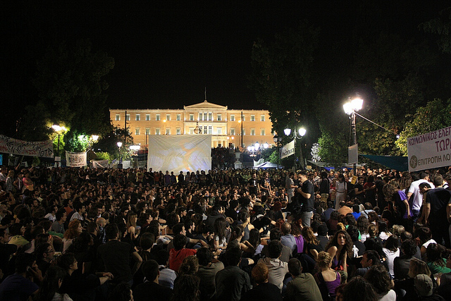

Atina İsyanda
Sevgili Prenses,
Sana yaşlı gözlerle yazıyorum. Burnumda bir sızı, genzimde yanma. Ağlamıyorum. Ağlasam sevincimden heyecanımdan ağlardım. İnsan onurunun, dayanışmasının zorbaya karşı duruşuna hislenirdim. Göz yaşlarım Atina’da Syntagma Meydanında şuursuzca atılan gaz bombalarından menkul. Memleketim polisinin güzelim biber gazı varken ben kalk Atina’da biber gazı ye. Türk polisine karşı mahcubum. Suyun öte yanı herşeyiyle bize benziyor. Neoliberalizm markalı gaz bombaları, halkının öfkesine karşı kendini şiddetle savunan zorbaları ele veriyor. Hopa’da suyunu taşını toprağını savunurken Metin Lokumcu’yu öldüren gaz; Atina’da, Madrid’de küresel hırsızlara karşı yaşamını savunanlara atılanlarla aynı.
Sana Atina’dan yazıyorum prenses. Ekonomisi tamamen çökme noktasına gelen, halkının parası hortumlanan, şimdi de geleceği ve tüm varlıkları IMF, AB ve Avrupa Merkez Bankası’nın (troyka) insafına kalmış Yunanistan’dayım. İflas eden ülkenin “yardımına” koşan Troyka, devletin sahip olduğu ne var ne yoksa satacaksınız şartı koyar. Ağır kemer sıkma politikalarıyla kamu çalışanlarının maaşlarının azaltılması planlanır. Onbinlerce kişinin işten çıkartılması kağıt üstünde planlanır. Sen kemer sıkma nedir iyi bilirsin Prenses. Kodamanlar zengin olsun diye oynanan oyunlar ekonomiyi çökertince faturanın dar gelirliye nasıl çıkarıldığını da iyi bilirsin. Yunan kardeşine gönül gözünü aç da bir dinle o zaman. Bu kemer sıkma politikaları ve geleceği ipotek etme karşılığında verilen milyarca dolar paranın ise yunan bankalarını finanse etmek için kullanılması planlanıyor.
Ülkeyi 340 milyar euro borç batağına sok. %16 olan işsizliğe ek olarak kamuda işten çıkarmaları planla. 50 milyar euro devlet malını sat. 6.5 milyar euro ek vergi getir. Çalışanların maaşlarında da indirime git. Bir krizin bütün faturası halka nasıl çıkarılır konulu dersimize hoş geldin prenses. Bu rakamlar kızgınlık ve tiksintiyle seni sokağa çıkartırmıydı acaba?
Yunanlıların bizden en temel farkı polis devleti ve darbeci ordu zorbalığıyla son dönemde sindirilememiş olmasında. Güçlü bir sendikal örgütlenme ve geniş katılımlı genel grevler düzenleyerek günlük hayatı durdurabilen bir emek gücünden bahsediyorum. Hakkı için sokağa çıkmaktan korkmayan bir ülke. Bizim aman siyasete karışma diyen ana babalarımızın tersine, buradaki amcalar teyzeler kendi çocuklarından önce, çocuklarının geleceği için sokaklara çıkıyor.
 15 Haziran’da bir genel grev yapıldı. Bu seneki üçüncü genel grev. Kamu çalışanları,hastane çalışanları, toplu taşıma çalışanları ve gazeteciler iş bıraktılar. İnsanlar bir araya gelince çok büyük bir güç ortaya çıkıyor prenses. Ama bu son grevin öncesinde çok daha ilginç bir gelişme yaşandı. Hani senin bir ara, bu internet protestolarından hiç bi cacık çıkmaz, dediğin zamanlarda yaşandı hatta. İspanya’daki işsizlik protestolarından ilham alan, herhangi bir politik eğilimi olmayan sıradan vatandaşlar “bıkkınlar” ismi altında örgütlenmeye başlar. Yaklaşık 2 hafta önce de Atina’da parlamento ve bakanlıkların orta yerindeki Syntagma Meydanı’na gelip çadırlarıyla yerleşirler. Binlerce insandan bahsediyorum prenses. Meydanda insanların sayısı her gün artmış. Ayrıca akşam işinden çıkan binlerce insan haftalardır meydana akın ediyor. Hemen bir iş bölümü başlamış. Herkese açık gruplarda, temizlik, güvenlik, yemek, iletişim, kürsü, müzik gibi bir çok alt grup oluşmuş.
15 Haziran’da bir genel grev yapıldı. Bu seneki üçüncü genel grev. Kamu çalışanları,hastane çalışanları, toplu taşıma çalışanları ve gazeteciler iş bıraktılar. İnsanlar bir araya gelince çok büyük bir güç ortaya çıkıyor prenses. Ama bu son grevin öncesinde çok daha ilginç bir gelişme yaşandı. Hani senin bir ara, bu internet protestolarından hiç bi cacık çıkmaz, dediğin zamanlarda yaşandı hatta. İspanya’daki işsizlik protestolarından ilham alan, herhangi bir politik eğilimi olmayan sıradan vatandaşlar “bıkkınlar” ismi altında örgütlenmeye başlar. Yaklaşık 2 hafta önce de Atina’da parlamento ve bakanlıkların orta yerindeki Syntagma Meydanı’na gelip çadırlarıyla yerleşirler. Binlerce insandan bahsediyorum prenses. Meydanda insanların sayısı her gün artmış. Ayrıca akşam işinden çıkan binlerce insan haftalardır meydana akın ediyor. Hemen bir iş bölümü başlamış. Herkese açık gruplarda, temizlik, güvenlik, yemek, iletişim, kürsü, müzik gibi bir çok alt grup oluşmuş.
Parlamentonun önünde, meclise inat her gün doğrudan demokrasi şiarıyla binlerce kişinin bir araya geldiği halk meclisi toplantıları yapılıyor. Günden güne yöntemlerini geliştirmişler. İsteyen herkes mikrofonu alıp konuşuyor. Ama sadece konuşmuyorlar. Aktif bir biçimde karar da alıyorlar. Deneyimlerini paylaşıyorlar. Ve birbirileriyle tanışıyorlar. Hiçbiri aynı fikirde değil. Sağcısından dincisinden solcusuna farklılıklarını konuşmak yerine birlikte ne yaparızı konuşuyorlar. Sonra bu günlük toplantıların notlarını internette herkese açık şekilde yayınlıyorlar. İşte 15 Haziran genel grev çağrısını yapan da bu halk meclisi. Demiş ki gelin arkadaşlar dört bir yandan bu parlamentoyu bloke edelim.
Seni bilirim, bir şüpheci prensessin. Kim var bu halk meclisinin arkasında diyeceksin. Anlaşılan herhangi bir örgütün ne öncülüğü ne de liderliği var. Tam tersine gelişmelerden dolayı sol örgütler de oldukça şaşkın. Bundan 2500 yıl önce yunanlılar Atina’da ilk doğrudan demokrasi deneyimini gerçekleştirmişti. Yunan halkinın bilincinde ve genlerinde aynı kendi kendini yönetme isteği devam ediyor anlaşılan.
"En büyük şiddet, yoksulluktur!"
Bu hareketin kendi dinamikleriyle geliştiğini gören anarşistler, daha önce kendi varlıklarının bu tür birliktelikleri zayıflatan tartışmalara yol açtığını bildiklerinden, hareketi destekleseler de birazcık kıyısında duruyorlar. Halk meclisi her türlü şiddet içeren yöntemi dışlıyor. Devlet ve Medya güçlerinin her türlü şiddeti hareketin meşruiyetini ortadan kaldırmak için kullanacağının herkes farkında. Yine de küçük ölçekli genç anarşist grupların çıkardığı birkaç olay yunan ve dünya medyasında abartılarak sunuluyor. Bu 20-30 kişiyi bahane eden polis en az 50bin kişinin üzerine ölçüsüz biçimde biber gazı bombaları atmaktan çekinmiyor. O kadar çok gaz bombası attılar ki, gösterilerin ertesi gününde bile meydanda dolaşırken biber gazından etkilenmemek mümkün değil. Öte yandan yunan polisinin taktikleri de senin bildiğin cinsten.
Eylem sırasında alanda, polis kimliği sonradan ayyuka çıkan ajan provakatörlerin sağı solu yakıp yıktığı da gelen haberler arasında. Sopaları servis edenlerin de polisler olduğu şüphesi var fotoğraflara bakınca.
Sağduyu ağır bassa da zaman imajlar zamanı. Mısır’da Tahrir Meydanındaki kitlesel direnişi yere göğe sığdıramayan batı medyası piyasaların ipoteği ve sansürü altında, Syntagma Meydanında doğan direniş ruhunu görmezden geliyor. Gören ve dili dönen herkesin konuşması ve anlatması boynumuzun borcu diyorum. Zira Atina’da kendi hakları için ayağa kalkan, konuşan, karar veren, örgütlenen ve birlikte hareket edebilen bir kitle var. Ve bu kitle, ne eyledikleri kadar nasıl eylediklerine, her çığlığı ve her sözü hareketin diline dahil etmeye çok önem veriyor. Çok da kararlı gözüküyorlar. Hükümeti istifa ettirdiler eylemin arkasından, Yunanistan’da devrim olur mu bilemem ama halkın bıçak kemiğe dayandıktan sonra uyanmaya başladığı kesin. Darısı bizim başımıza.
Gece çekirdek çitlemeyi bilen yegane avrupa milletine mensup yunan kardeşlerimizin binlercesiyle eylem alanında sohbet halindeyken bir de ay tutulunca aha dedim vallahi devrim oluyor. Bu insanların toplu olarak bir araya geldikleri ortamlarda bambaşka bir enerji toparlanıyor sanki. Herkes bin senelik ahbapmışcasına samimi. Geyiğin dibine vururken ben de yunanlı arkadaşlara ergenekon meselesini anlattım. Sonra kelimenin kökenine girdim ki baktım kimse takip edemiyor, zaten benim de kafam karışmıştı dağ mı deliniyo demir mi dövülüyo falan diye. Zaten ay da tutuluyor. Komuşum ergenekona deyip gecenin keyfini çıkardım. Biber gazından yanan gözlerle hala halay çekebiliyorlarsa bunlar da bizden dedim içimden.
Son bir not eklemeden geçmek de haksızlık olacak. Yunanistan halk direnişi, İspanya’daki toplumsal hareketlilik ve eylemlerle de oldukça paralellik gösteriyor. Gelgelelim, neoliberalizmin küresel çıkmazının ve kriz döngüsünün, dünya krizlerini tüm komforuyla kendi koltuğuna yaslanıp tüm ayrıcalıklarına sıkı sıkı sarılarak izleyen ve hatta bundan beslenen Avrupa orta sınıfına dokunması ayrıca ironik. Ne diyoruz o zaman. Hayden Marksist Analistler, görev başına!.. annatın bakem noluyo….Orta sınıfı silkelemeden devrim olmuyor galiba. Meraklanma millliyetçi yurdum ortası.Bu yanna bakarken dudağının kenarındaki yunan düşmanı gülümsemeyi farketmiyorum sanma. Kriz sırası sana da gelir.


{kind=link}
{kind=link}
Günde 4 saat çalışarak ayda 3000 euro almanın ceremesini çekiyorlar. Almanlar salak mı hem eşek gibi çalışıp yunanlılar siesta yapsınlar diye para versin. Yunanlıların durumu kredi kartına yüklenip ödeyemeyip banka hacze gelince ağlayıp sızlayanların durumuna benziyor. Ne kadar üretiyorsan o kadar refah içinde yaşarsın.
Uretmek ve refah? kuresel anlamdaki ekonomik krizlerin uretmekle hic bir ilgisinin olmadigini gormek lazim. Yunanistan ya da oncesinde Irlanda, veya 2000lerin basinda Latin Amerika ulkeleri (basta arjantin) uretmedigi icin ekonomik krizin girdabina takilmadi. Kuresel ekonomiye, baska bir degisle Wall Street, gobekten bagli olup takildigi yerde “sen merak etme biz sana arka cikip borc vericez” diyen IMF ve Dunya Bankasi gibi kasikla verip kepceyle geri alan uluslararsi enstituler yuzunde kendini ekonomik kriz icinde buldu.
Devir buyuk buhran devri degil, ortalikta savas sonrasi uretim eksikligi sorunu filan da yok. Kredi kartina yuklenip aglayanlarin halini dusununce de, taksim veya sisli’de sokakta stand acip kredi karti DAGITAN bankalar geldi aklima. Insanogluna arkasina yaslayabilecegi, karsiliksiz kredi destegi verdiginde algiliyamiyor durumu, sevindirik oluyo. Eve haciz gelince dank ediyo tabi. ama kredi karti bireysel alinan bir risk, ve yine “uretim” icraatiyle hic bir ilgisi yok. ayagini yorganina gore uzatmamakla ilgisi var, ya da kicinin deligini bilmemek de denir halk arasinda. Halbuki kendisini kriz icinde yuzer bulan bir halkin sokaga dokulmesinin kendi tercihleriyle hic bir ilgisi yok, tamamen degismekte olan kuresel politik ekonomik guc dengeleri icinde hukumetlerinin ulkeyi koymak istedigi pozisyonla ve bu pozisyon karsisinda aldigi risklerle ilgisi var. Sokaga cikmis, diyelim yorgos abi, ister Atina’da dukkaninda gunde 4 saat calissin gerisinde siesta yapsin, ister Selanik’te tarlasinda gunde 10 saat calisip domates uretsin, bu kuresel guc dengeleri icin alinan riskle hic bir alakasi yoktur. haberi bile oldugundan supheliyim…
Mavrikos: Borçlu olan Yunan halkı değil 20.06.2011 – 07:30
Dünya Sendikalar Federasyonu (WFTU) Genel Sekreteri Yorgos Mavrikos, Yunanistan’daki kriz, AB üyeliği ve sendikal hareketin sorunları hakkındaki düşüncelerini soL okurları ile paylaştı. Mavrikos’un açıklamaları sermayenin krizden nasıl kâr ettiğini ortaya koyuyor.
1950 yılında hayvancılıkla uğraşan bir ailenin çocuğu olarak dünyaya gelen George Mavrikos, 16 yıl boyunca tarım makineleri üreten bir fabrikada çalıştı. Öğrencilik yıllarından itibaren sürekli işçi sınıfı mücadelesinin içerisinde yer aldı. Uzun yıllar boyunca Atina Özel Sektör Çalışanları Birliği başkanlığı yapan Mavrikos, 1993-1997 yıllarında Yunanistan Genel Emek Konfederasyonu genel sekreteri olarak görev yaptı. 1999-2008 yılında Tüm İşçilerin Militan Cephesi (PAME) başkanlığı yapan Mavrikos, 2000 yılında Dünya Sendikalar Federasyonu (WFTU)’nun 14. Kongresi’nde başkan yardımcılığına seçildi. 2000-2005 yılları arasında aynı zamanda WFTU’nun Avrupa Bürosu Koordinatörü olarak görev yapan Mavrikos, federasyonun Havana’da düzenlenen 15. Kongre’sinde Genel Sekreter seçildi. Mavrikos 2007 yılında yapılan genel seçimlerde Yunanistan Komünist Partisi (KKE)’nden milletvekili seçildi.
( Yunanistan’da yaşanan ekonomik krizden ötürü sürekli sokak gösterileri düzenleniyor. Süreci değerlendirir misiniz? Neler yaşanıyor, işçi sınıfı açısından durum nedir? )
Yunanistan’da geçen yıl yüzde 8 olan işsizlik oranı yüzde 18’e ulaşmış durumda. Tabii bunlar resmi rakamlar, gerçek rakamlar bunun da üstündedir. Önümüzdeki yılın başında yüzde 20’yi geçmesi bekleniyor. Geçen bir buçuk yıl içinde kamu ve özel çalışanların maaşlarında yüzde 25 – 30 luk bir kesinti söz konusu. Bir ay önce de toplu sözleşme hakkı ortadan kaldırıldı. İşverenler işçilerle teke tek kontrat yapıyorlar.
İşçi sınıfı açısından hak kayıplarının arttığı bu süreçte eylemler de arttı. Hükümet buna karşı eylemleri şiddetle bastırmaya çalışıyor. Grevler yasadışı girişimlermiş gibi yasaklanmaya çalışılıyor. Tabii ki halk bu yasaklara uymuyor ve yüz binlerce insan sokaklara dökülüyor. Halk AB’ye, IMF’ye ve Hükümetin son uygulamalarına karşı tepkisini ortaya koyuyor.
Yunanistan’ın söz konusu borçlarını halk kabul etmiyor. Çünkü bu borca yol açan halk değil, o yüzden de işçiler emekçiler borcun gerçek kaynağına vurgu yapan bir eylemlilik sürecindeler.
( Türk basınında Yunanistan’daki kriz süreci ile ilgili dikkati çeken bir değerlendirme var. Bu değerlendirmeye göre, Yunanistan halkı AB fonları sayesinde üretmeden tüketmeye alıştı ve ekonomik kriz bu yüzden patlak verdi. Bu yorum hakkında ne düşünüyorsunuz, Yunanistan’da da benzer yorumlar yapılıyor mu? )
Bunlar tamamen asılsız değerlendirmeler. Bir örnekle bu şekilde olmadığını ortaya koyabiliriz kolaylıkla. AB üyeliğinden önce Yunanistan’da beş büyük tersane vardı ve 27 bin işçi çalışıyordu bu tersanelerde. AB kararı ile bu tersaneler kapatıldı. AB’den bir para akışı olduğu doğrudur. Ancak para bu ve benzeri işletmeleri kapattırmak amacı ile verildi Yunanistan’a. Tarımsal üretim AB sürecinden önce yüzde 30 iken şimdi yüzde 8’e inmiş durumda.
Yunanistan’dan istenen şey sadece turizm hizmetidir. Bunun dışındaki bütün üretim süreçlerine müdahale ediliyor. Bir nevi Avrupa’nın garsonu olması isteniyor Yunanistan’dan. Bu da AB’nin gerçek yüzünü ortaya koyuyor. Bir buçuk yıl içinde milyarlarca avro Almanya ve Avusturya’ya sadece borcun faizi olarak aktarılmış. Yunanistan’da çalışanların maaşı Almanya’da çalışanların maaşının yüzde 30’una Fransa’dakilerin ise yüzde 35’ine denk geliyor.
( AB’nin Yunanistan’a etkilerinden bahseder misiniz? )
Bizim amacımız AB’den çıkmak. AB Yunanistan’daki üretimi yok etti. Okullar özelleştirilmeye başlandı. Havayolları özelleştirildi. Yolların tamamının özelleştirilmesi gündemde. Soluduğumuz hava dışında her şey özelleştirildi. Yunanistan’ın krizde olduğu durumda bile sermaye çok para kazanıyor. Söz konusu olan sermayenin hırsızlığıdır. Yunan halkı bu durumun farkında. Yunanistan’a yüksek faizlerle borç veriliyor. Borçlar faizden kazanç sağlamak için veriliyor.
Şu an Yunanistan’da özgürlükler kısıtlanmaya başlandı. Örneğin komünizm propagandası yapan partilere karşı yeni bir yasa çıkarılıyor. Partilere seçime girebilmek için AB Anayasasını onaylama şartı getiriliyor. AB Anayasasına baktığımızda, sermayenin egemenliğinin açık açık teyit edildiğini görüyoruz. AB Anayasasını onaylamayan partinin seçime girme hakkı elinden alınacak. Bu durumda Avrupa’daki komünist partilerin bir çoğu seçime giremeyecek. AB aynı zamanda sendikaların ve partilerin iç işleyişlerine de doğrudan müdahale ediyor. Yunanistan Komünist Partisi ve PAME AB’den çıkılmasını istiyor. AB’den çıkarsak Yunan halkı daha iyi bir hayat sürecek.
( Kriz sürecinin yol açtığı eylemlilikte PAME’nin etkisi nedir? Diğer sendikal örgütlenmelerle PAME arasında bir fark var mı? )
Yunanistan’da iki tür sendika var. Birincisi sosyal demokratların Genel İşçi Sendikası diğeri de komünistlerin sendikal örgütlenmesi PAME. Açıkçası komünistler dışında kalan sendikal kesim işçileri örgütlemekten korkan fabrikalardan uzak duran bir yaklaşım içinde. PAME’nin amacı bütün işçileri bir çatı altında toplayarak mücadele etmektir.
Toplu sözleşme hakkının korunması, özelleştirmelere karşı bir blok oluşturmak, maaş kesintilerine karşı mücadele etmek yürütülen çalışmalar olmakla birlikte aynı zamanda işçileri sermayeye ve iktidar partilerine boyun eğmemeye çağırıyoruz. Bu süreçte PAME, işçilerle, gençlerle ve çiftçilerle diyalog halinde.
( Dünya Sendikalar Federasyonu’nun başkanı olarak 2009’da patlak veren krize sizce sendikalar gerekli yanıtı üretti mi? )
Federasyon olarak kriz sürecinde bölgesel çalışmalar yürüttük. İlki Portekiz’de ikincisi ise Çin’de yapıldı. Son olarak Nisan ayında Atina’da geniş katılımlı uluslar arası bir toplantı düzenlendi. Bir çok sendika, sendikal konfederasyon katıldı bu toplantıya. Burada işçi sınıfının farkında olması gereken konu, sermayenin kriz koşullarında kâr etmeye devam ettiğidir. Krizin faturasının sürekli emekçilere kesildiği bilince çıkarılmalı.
( Son olarak Türkiye’de sendikal örgütlenmeye dair gözlemleriniz nedir? )
Avrupa’da yaşanan sorunların aynısı Türkiye için de geçerli. Sarı sendikal örgütlenmeler burada da mevcut. TKP’nin Türkiye işçi sınıfını örgütlü mücadelenin bir parçası haline dönüştüreceğine inanıyoruz.
Federasyon olarak Türkiye’deki devrimci sendikaları destekliyoruz. Sendikalarda gençlerin kadınların yer almadığı gözleniyor. İşçilerin çok azı sendikalarda örgütlü. Bu sayının arttırılması gerekiyor.
(soL – Haber Merkezi)
Aslında herşeyi anlatıyor ;
http://inapcache.boston.com/universal/site_graphics/blogs/bigpicture/greeceviolence_061711/bp2.jpg
“bıkkınlar” diye adlandığınız grubun yunanca ismi nedir acaba?
αγανακτισμένος aganaktisménos olduğunu tahmin ediyorum. İngilizcede indignant diye geçiyor ama bir şekilde türk medyası bıkkınlar diye aldığı için ben de aynı şekilde kullandım. sen dikkatimi çekince biraz daha bakındım. sonrada bir kaç medya organı hatayı farkedip bıkkınlar ve öfkeliler diye kullanmış. ajansın çeviri hatası mı bilinmez. benim anladığım indignant adaletsizlik karşısında öfkelenen anlamına geliyor.
Hareket, Ispanya’da ‘los indignados’, Belcika Fransizcasi’nda da ‘les indignès’ adini aldi. Turkce’ye cevirince tuhaf olmus. ‘Ofkeliler’ direk siddet cagristirsa da ‘bikkinlar’dan iyi.. Keske ‘kaygılılar’ mi olsaymis acaba 🙂 tabi henuz turkiye’de bir hareketlenme olmadigi icin uygun sozcuk bulmak zor.
darısı bize,tepkiler saman alevigibi yükselir,balon gibi söner.Direnenlere ,göğüs gerenlere selam olsun.
Hareketin adını artık hepimiz biliyoruz. everyday we are chapulling 🙂